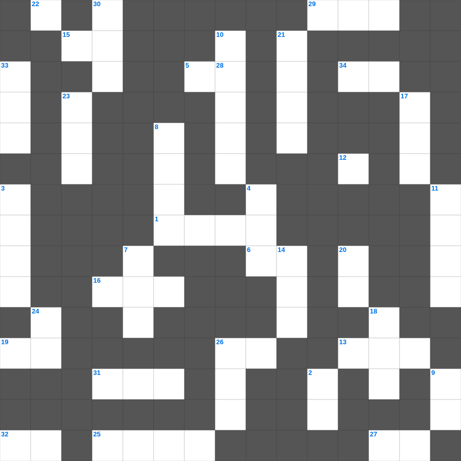

요한일서: 하나님은 사랑이심이라
📌 서비스 정의
십자가로세로는 교회 주보와 주일학교에서 사용할 수 있는 성경 기반 가로세로 퍼즐 서비스입니다. 성경 인물, 사건, 핵심 구절을 바탕으로 제작되었습니다. 온라인 풀이 및 인쇄 기능을 제공합니다.
📖 요한일서란?
요한일서는 예수 그리스도가 참 하나님이자 참 사람임을 확증하며, 하나님과 형제를 향한 사랑이 참된 신앙의 증거임을 강조하는 서신입니다.
📚 요한일서의 주요 사건·주제
빛 가운데 사는 삶에 대한 가르침 · 하나님의 자녀로서의 신분 · 사랑의 계명에 대한 강조 · 거짓 영을 분별하는 법 · 영생의 확신에 대한 가르침
요한일서의 말씀을 퀴즈로 배우는 요한일서 가로세로 퀴즈입니다. 가로 힌트와 세로 힌트를 보고 35개의 단어를 맞춰보세요. 인쇄도 가능하고 정답 확인도 바로 되니 소그룹 모임이나 가정 예배 시간에도 활용하실 수 있습니다.

📝 가로 힌트
1. 쉬지 말고 이것하라
5. 나는 마음이 이것하고 겸손하니
6. 곳곳에 기근과 이것이 있으리니
13. 하나님의 법궤를 보관하던 상자
15. 진리의 이것 띠
16. 향을 피워 올리는 곳
19. 예수 그리스도는 어제나 오늘이나 영원토록 이것하시니라
25. 범사에 이것하라 이는 그리스도 예수 안에서 너희를 향하신 하나님의 뜻이니라
26. 내가 누구를 보내며 누가 우리를 위하여 이것할꼬
27. 아브라함이 이삭 대신 드린 제물
29. 사자 굴에서도 살아남은 사람
31. 예수님이 세례받으실 때 성령이 이 모양으로 내려옴
32. 동방박사들이 별을 보고 찾아와 경배한 날
34. 너희가 서로 사랑하면 모든 사람이 너희가 내 이것인 줄 알리라
📝 세로 힌트
2. 바다의 물고기와 이것들
3. 다윗이 사울을 죽일 기회에 옷자락만 베었음
4. 알곡과 이것의 비유
7. 솔로몬 성전 건축에 쓰인 고급 나무
8. 요나를 삼켰던 존재
9. 열두 돌을 세운 요단강가 지명
10. 진리가 너희를 이것케 하리라
11. 할 수 있거든이 무슨 말이냐 믿는 자에게는 이것이 없느니라
12. 베드로가 세 번 부인할 때 울었던 새
14. 성소의 떡상 위에 놓인 12개의 떡
17. 예수님이 십자가에 못 박히신 곳
18. 성막 가장 안쪽, 하나님의 임재 상징
20. 르호보암 왕 때 나라가 둘로 나뉨
21. 인간의 힘으로 구원받을 수 없음을 뜻함
22. 너희는 먼저 그의 나라와 그의 이것을 구하라
23. 안드레의 형제
24. 하나님이 세상을 창조하신 기간(일)
26. 베드로가 고기를 잡던 호수
28. 성경에서 가장 넓은 강
30. 모세의 누나
🧩 이 퍼즐에서 배우는 내용
이 퍼즐은 요한일서: 하나님은 사랑이심이라의 핵심 단어와 개념을 자연스럽게 복습할 수 있도록 구성되었습니다. 주일학교 수업이나 개인 성경공부에서 학습 내용을 점검하는 용도로 바로 활용할 수 있습니다.
🧑🏫 교회 교육 자료 활용
이 퍼즐은 주일학교 교재 추천 자료로 활용할 수 있고, 주일학교 주보에 넣기 좋은 분량으로 구성되어 있습니다. 수업용 주일학교 교안에 활동지로 붙이거나, 예배 후 복습용 주일학교 공과교재로 바로 사용할 수 있습니다.
🏷️ 키워드
요한일서 가로세로 퀴즈, 요한일서, 십자가로세로, 성경퀴즈, 말씀퀴즈, 가로세로퍼즐, 주일학교 교재 추천, 주일학교 주보, 주일학교 교안, 주일학교 공과교재